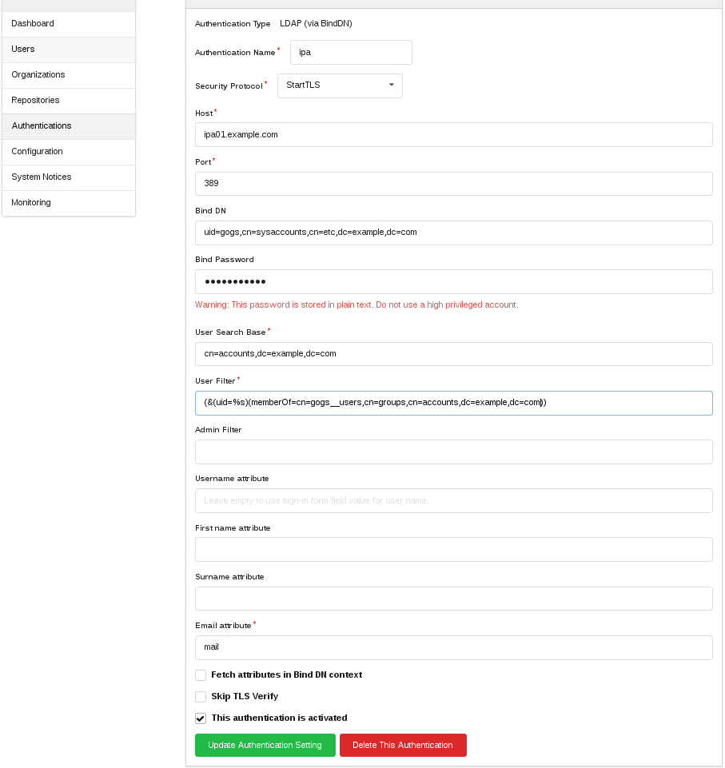

授权认证
LDAP
基于 BindDN 和 simple auth 的 LDAP 授权方式共享以下字段：
认证名称 （必填）
- A name to assign to the new method of authorization.
主机地址 （必填）
- The address where the LDAP server can be reached.
- Example:
mydomain.com
主机端口 （必填）
- The port to use when connecting to the server.
- Example:
636
启用 TLS 加密（可选）
- Whether to use TLS when connecting to the LDAP server.
管理员过滤规则（可选）
- An LDAP filter specifying if a user should be given administrator
privileges. If a user accounts passes the filter, the user will be
privileged as an administrator. - Example:
(objectClass=adminAccount)
- An LDAP filter specifying if a user should be given administrator
- 用户名属性（可选）
- The attribute of the user’s LDAP record containing the user name. Given
attribute value will be used for new Gogs account user name after first
successful sign-in. Leave empty to use login name given on sign-in form. - This is useful when supplied login name is matched against multiple
attributes, but only single specific attribute should be used for Gogs
account name, see “User Filter”. - 例如：
uid
- The attribute of the user’s LDAP record containing the user name. Given
名字属性（可选）
- The attribute of the user’s LDAP record containing the user’s first name.
This will be used to populate their account information. - Example:
givenName
- The attribute of the user’s LDAP record containing the user’s first name.
姓氏属性（可选）
- The attribute of the user’s LDAP record containing the user’s surname This
will be used to populate their account information. - Example:
sn
- The attribute of the user’s LDAP record containing the user’s surname This
邮箱属性 （必填）
- The attribute of the user’s LDAP record containing the user’s email
address. This will be used to populate their account information. - Example: mail
- The attribute of the user’s LDAP record containing the user’s email
基于 BindDN 需要填充以下字段：
绑定 DN（可选）
- The DN to bind to the LDAP server with when searching for the user. This
may be left blank to perform an anonymous search. - Example: cn=Search,dc=mydomain,dc=com
- The DN to bind to the LDAP server with when searching for the user. This
绑定密码（可选）
- The password for the Bind DN specified above, if any. Note: The password
is stored in plaintext at the server. As such, ensure that your Bind DN
has as few privileges as possible.
- The password for the Bind DN specified above, if any. Note: The password
用户搜索基准 （必填）
- The LDAP base at which user accounts will be searched for.
- Example: ou=Users,dc=mydomain,dc=com
用户过滤规则 （必填）
- An LDAP filter declaring how to find the user record that is attempting to
authenticate. The%smatching parameter will be substituted with login
name given on sign-in form. - Example:
(&(objectClass=posixAccount)(uid=%s)) - To substitute more than once
%[1]sshould be used instead, eg. when
matching supplied login name against multiple attributes such as user
identifier, email or even phone number. - Example:
(&(objectClass=Person)(|(uid=%[1]s)(mail=%[1]s)(mobile=%[1]s)))
- An LDAP filter declaring how to find the user record that is attempting to
基于 simple auth 需要填充以下字段：
User DN （必填）
- A template to use as the user’s DN. The
%smatching parameter will be substituted with login name given on sign-in form. - Example:
cn=%s,ou=Users,dc=mydomain,dc=com - Example:
uid=%s,ou=Users,dc=mydomain,dc=com
- A template to use as the user’s DN. The
用户过滤规则 （必填）
- An LDAP filter declaring when a user should be allowed to log in. The
%s
matching parameter will be substituted with login name given on sign-in
form. - Example:
(&(objectClass=posixAccount)(cn=%s)) - Example:
(&(objectClass=posixAccount)(uid=%s))
- An LDAP filter declaring when a user should be allowed to log in. The
验证组成员 需要填充以下字段：
组搜索基准 DN（可选）
- The LDAP DN used for groups.
- Example:
ou=group,dc=mydomain,dc=com
组名称过滤（可选）
- An LDAP filter declaring how to find valid groups in the above DN.
- Example:
(|(cn=gogs_users)(cn=admins))
包含用户的组属性（可选）
- Which group LDAP attribute contains an array above user attribute names.
- Example:
memberUID
组内用户属性（可选）
- Which user LDAP attribute is listed in the group.
- Example:
uid
PAM
To configure this you just need to set the ‘PAM Service Name’ to a filename in /etc/pam.d/.
If you want it to work with normal Linux passwords, the user running Gogs must have read access to /etc/shadow.
SMTP
Gogs 支持通过指定邮箱服务器来对用户进行创建和认证，可以通过配置以下选项启用该功能：
认证名称 （必填）
- A name to assign to the new method of authorization.
SMTP 认证类型 （必填）
- Type of authentication for use on your SMTP host, PLAIN or LOGIN.
主机地址 （必填）
- The address where the SMTP host can be reached.
- Example:
smtp.mydomain.com
端口号 （必填）
- The port to use when connecting to the server.
- Example:
587
域名白名单
- Restrict what domains can log in if you’re using public SMTP host or SMTP host with multiple domains.
- Example:
gogs.io,mydomain.com,mydomain2.com
启用 TLS 加密
- Enable TLS encryption on authentication.
忽略 TLS 验证
- Disable TLS verify on authentication.
This authentication is activate
- Enable or disable this auth.
Freeipa
In order to login to the Gogs using FreeIPA credentials, you need to create a bind account for Gogs to use:
On the FreeIPA server, create a
gogs.ldiffile, replacing dc=example,dc=com with your DN, and providing an appropriately secure password:dn: uid=gogs,cn=sysaccounts,cn=etc,dc=example,dc=comchangetype: addobjectclass: accountobjectclass: simplesecurityobjectuid: gogsuserPassword: secure passwordpasswordExpirationTime: 20380119031407ZnsIdleTimeout: 0
Import the LDIF (change localhost to an IPA server if needed), you’ll be prompted for your Directory Manager password:
ldapmodify -h localhost -p 389 -x -D \"cn=Directory Manager" -W -f gogs.ldif
- Add an IPA group for gogs_users :
ipa group-add --desc="Gogs Users" gogs_users
Note! if you get error about ipa credentials please run kinit admin and give your admin accound password.
Now login to the gogs as an Admin, click on “Authentication” under Admin Panel. Then click New LDAP Source and fill in the details, changing all where appropriate to your own domain as photo below:
